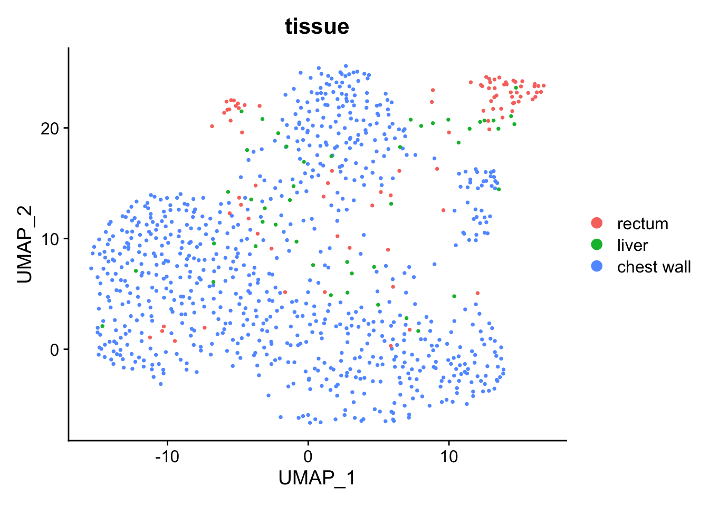

srtdisk provides two ways to load h5ad files into R as Seurat objects:
Convert() +
LoadH5Seurat() — the traditional two-step approach
via an intermediate h5Seurat fileLoadH5AD() — direct loading without
intermediate files (new in v0.3.0)LoadH5AD() is simpler and faster for common use cases:
load a scanpy-processed h5ad file directly into a Seurat object,
preserving expression data, metadata, dimensional reductions, and
neighbor graphs.
library(Seurat)
library(srtdisk)The package bundles a colorectal cancer sample from CellxGene (935 cells x
25,344 genes). Let’s load it directly with LoadH5AD():
h5ad_path <- system.file("testdata", "crc_sample.h5ad", package = "srtdisk")
crc <- LoadH5AD(h5ad_path, verbose = TRUE)
crc
#> An object of class Seurat
#> 25344 features across 935 samples within 1 assay
#> Active assay: RNA (25344 features, 3466 variable features)
#> 2 layers present: counts, data
#> 1 dimensional reduction calculated: umapThe h5ad file is loaded in a single call. Let’s inspect the result:
# Assays and layers
cat("Assays:", paste(Assays(crc), collapse = ", "), "\n")
#> Assays: RNA
cat("Layers:", paste(Layers(crc), collapse = ", "), "\n")
#> Layers: counts, data
# Metadata columns
cat("Metadata columns:", ncol(crc[[]]), "\n")
#> Metadata columns: 50
head(crc[[]][, 1:min(5, ncol(crc[[]]))], 3)
#> orig.ident nCount_RNA nFeature_RNA DC 1
#> 120703423724317_KG182M2 H5AD 47096 7255 -0.028095834
#> 120703436319453_KG182M2 H5AD 6742 2719 0.005544095
#> 120703436877172_KG182M2 H5AD 13992 4172 0.045204181
#> DC 2
#> 120703423724317_KG182M2 -0.006741798
#> 120703436319453_KG182M2 0.020778758
#> 120703436877172_KG182M2 -0.032072473# Dimensional reductions
cat("Reductions:", paste(names(crc@reductions), collapse = ", "), "\n")
#> Reductions: umap
# Neighbor graphs
if (length(crc@graphs) > 0) {
cat("Graphs:", paste(names(crc@graphs), collapse = ", "), "\n")
}If the h5ad file contains UMAP coordinates (stored in
obsm/X_umap), they are automatically restored:
if ("umap" %in% names(crc@reductions)) {
DimPlot(crc, reduction = "umap", group.by = "tissue", pt.size = 0.5)
}
The traditional approach requires two steps and creates an intermediate h5Seurat file:
# Traditional approach (two steps)
local_h5ad <- file.path(tempdir(), basename(h5ad_path))
file.copy(h5ad_path, local_h5ad, overwrite = TRUE)
#> [1] TRUE
Convert(local_h5ad, dest = "h5seurat", overwrite = TRUE)
h5seurat_path <- sub("\\.h5ad$", ".h5seurat", local_h5ad)
crc_traditional <- LoadH5Seurat(h5seurat_path)
cat("LoadH5AD cells:", ncol(crc), "\n")
#> LoadH5AD cells: 935
cat("Traditional cells:", ncol(crc_traditional), "\n")
#> Traditional cells: 935
cat("LoadH5AD features:", nrow(crc), "\n")
#> LoadH5AD features: 25344
cat("Traditional features:", nrow(crc_traditional), "\n")
#> Traditional features: 25344Both approaches produce equivalent Seurat objects.
LoadH5AD() is simpler when you don’t need the intermediate
h5Seurat file.
You can also use LoadH5AD() to round-trip data that was
originally created in Seurat, exported to h5ad via
Convert(), and optionally processed in Python.
library(SeuratData)
if ("pbmc3k.final" %in% rownames(InstalledData())) {
data("pbmc3k.final", package = "pbmc3k.SeuratData")
pbmc <- UpdateSeuratObject(pbmc3k.final)
# Export to h5ad
SaveH5Seurat(pbmc, filename = "pbmc3k_direct.h5Seurat", overwrite = TRUE)
Convert("pbmc3k_direct.h5Seurat", dest = "h5ad", overwrite = TRUE)
# Load back with LoadH5AD
pbmc_loaded <- LoadH5AD("pbmc3k_direct.h5ad")
pbmc_loaded
} else {
message("pbmc3k.final dataset not installed; skipping roundtrip example.")
}if (exists("pbmc", inherits = FALSE) && exists("pbmc_loaded", inherits = FALSE)) {
cat("Original cells:", ncol(pbmc), "\n")
cat("Loaded cells:", ncol(pbmc_loaded), "\n")
# Check reductions
cat("Original reductions:", paste(names(pbmc@reductions), collapse = ", "), "\n")
cat("Loaded reductions:", paste(names(pbmc_loaded@reductions), collapse = ", "), "\n")
}if (exists("pbmc_loaded", inherits = FALSE) && "umap" %in% names(pbmc_loaded@reductions)) {
DimPlot(pbmc_loaded, reduction = "umap", group.by = "seurat_annotations",
label = TRUE, pt.size = 0.5) + NoLegend()
}LoadH5AD() reads the following from h5ad files:
| h5ad Location | Seurat Destination | Description |
|---|---|---|
X |
Default assay data layer |
Expression matrix (sparse or dense) |
raw/X |
counts layer |
Raw counts if present |
layers/* |
Additional layers | Named layers mapped to Seurat slots |
obs |
meta.data |
Cell metadata (categorical preserved as factors) |
var |
Feature metadata | Gene-level annotations |
var['highly_variable'] |
VariableFeatures() |
Variable feature selection |
obsm/X_umap |
reductions$umap |
UMAP coordinates |
obsm/X_pca |
reductions$pca |
PCA embeddings |
obsm/X_tsne |
reductions$tsne |
tSNE coordinates |
obsm/spatial |
Spatial coordinates | Via ConvertH5ADSpatialToSeurat() |
obsp/connectivities |
graphs$RNA_snn |
SNN graph |
obsp/distances |
graphs$RNA_nn |
Distance graph |
uns/* |
misc |
Unstructured annotations |
| Scenario | Recommended |
|---|---|
| Quick exploration of an h5ad file | LoadH5AD() |
| Round-trip editing (load, modify, re-export) | Convert() + LoadH5Seurat() |
| Need h5Seurat for other tools | Convert() |
| Loading scanpy-processed data for Seurat analysis | LoadH5AD() |
| Working with spatial h5ad from CellxGene | LoadH5AD() |
sessionInfo()
#> R version 4.5.2 (2025-10-31)
#> Platform: aarch64-apple-darwin20
#> Running under: macOS Tahoe 26.3
#>
#> Matrix products: default
#> BLAS: /System/Library/Frameworks/Accelerate.framework/Versions/A/Frameworks/vecLib.framework/Versions/A/libBLAS.dylib
#> LAPACK: /Library/Frameworks/R.framework/Versions/4.5-arm64/Resources/lib/libRlapack.dylib; LAPACK version 3.12.1
#>
#> locale:
#> [1] en_US.UTF-8/en_US.UTF-8/en_US.UTF-8/C/en_US.UTF-8/en_US.UTF-8
#>
#> time zone: America/Indiana/Indianapolis
#> tzcode source: internal
#>
#> attached base packages:
#> [1] stats graphics grDevices utils datasets methods base
#>
#> other attached packages:
#> [1] stxKidney.SeuratData_0.1.0 stxBrain.SeuratData_0.1.2
#> [3] ssHippo.SeuratData_3.1.4 pbmcref.SeuratData_1.0.0
#> [5] pbmcMultiome.SeuratData_0.1.4 pbmc3k.SeuratData_3.1.4
#> [7] panc8.SeuratData_3.0.2 cbmc.SeuratData_3.1.4
#> [9] SeuratData_0.2.2.9002 srtdisk_0.3.1
#> [11] Seurat_5.4.0 SeuratObject_5.3.0
#> [13] sp_2.2-1 reticulate_1.45.0
#>
#> loaded via a namespace (and not attached):
#> [1] RColorBrewer_1.1-3 jsonlite_2.0.0 magrittr_2.0.4
#> [4] spatstat.utils_3.2-2 farver_2.1.2 rmarkdown_2.30
#> [7] vctrs_0.7.1 ROCR_1.0-12 spatstat.explore_3.7-0
#> [10] htmltools_0.5.9 sass_0.4.10 sctransform_0.4.3
#> [13] parallelly_1.46.1 KernSmooth_2.23-26 bslib_0.10.0
#> [16] htmlwidgets_1.6.4 ica_1.0-3 plyr_1.8.9
#> [19] plotly_4.12.0 zoo_1.8-15 cachem_1.1.0
#> [22] igraph_2.2.2 mime_0.13 lifecycle_1.0.5
#> [25] pkgconfig_2.0.3 Matrix_1.7-4 R6_2.6.1
#> [28] fastmap_1.2.0 fitdistrplus_1.2-6 future_1.69.0
#> [31] shiny_1.13.0 digest_0.6.39 patchwork_1.3.2
#> [34] tensor_1.5.1 RSpectra_0.16-2 irlba_2.3.7
#> [37] labeling_0.4.3 progressr_0.18.0 spatstat.sparse_3.1-0
#> [40] httr_1.4.8 polyclip_1.10-7 abind_1.4-8
#> [43] compiler_4.5.2 bit64_4.6.0-1 withr_3.0.2
#> [46] S7_0.2.1 fastDummies_1.7.5 MASS_7.3-65
#> [49] rappdirs_0.3.4 tools_4.5.2 lmtest_0.9-40
#> [52] otel_0.2.0 httpuv_1.6.16 future.apply_1.20.2
#> [55] goftest_1.2-3 glue_1.8.0 nlme_3.1-168
#> [58] promises_1.5.0 grid_4.5.2 Rtsne_0.17
#> [61] cluster_2.1.8.2 reshape2_1.4.5 generics_0.1.4
#> [64] hdf5r_1.3.12 gtable_0.3.6 spatstat.data_3.1-9
#> [67] tidyr_1.3.2 data.table_1.18.2.1 spatstat.geom_3.7-0
#> [70] RcppAnnoy_0.0.23 ggrepel_0.9.7 RANN_2.6.2
#> [73] pillar_1.11.1 stringr_1.6.0 spam_2.11-3
#> [76] RcppHNSW_0.6.0 later_1.4.8 splines_4.5.2
#> [79] dplyr_1.2.0 lattice_0.22-9 survival_3.8-6
#> [82] bit_4.6.0 deldir_2.0-4 tidyselect_1.2.1
#> [85] miniUI_0.1.2 pbapply_1.7-4 knitr_1.51
#> [88] gridExtra_2.3 scattermore_1.2 xfun_0.56
#> [91] matrixStats_1.5.0 stringi_1.8.7 lazyeval_0.2.2
#> [94] yaml_2.3.12 evaluate_1.0.5 codetools_0.2-20
#> [97] tibble_3.3.1 cli_3.6.5 uwot_0.2.4
#> [100] xtable_1.8-8 jquerylib_0.1.4 dichromat_2.0-0.1
#> [103] Rcpp_1.1.1 globals_0.19.1 spatstat.random_3.4-4
#> [106] png_0.1-8 spatstat.univar_3.1-6 parallel_4.5.2
#> [109] ggplot2_4.0.2 dotCall64_1.2 listenv_0.10.1
#> [112] viridisLite_0.4.3 scales_1.4.0 ggridges_0.5.7
#> [115] purrr_1.2.1 crayon_1.5.3 rlang_1.1.7
#> [118] cowplot_1.2.0